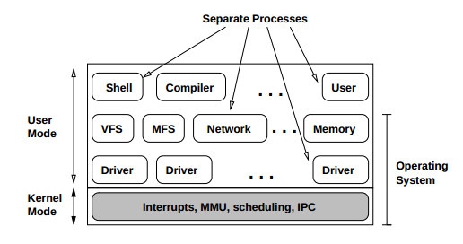

A minimal kernel provides
interrupt handlers, a mechanism for starting and stopping processes, a scheduler,
and interprocess communication. Logically, server and driver processes are structured into three layers, although they all are user-mode processes as seen by the kernel. The lowest level contains device drivers. Above this layer are the server processes - VFS server, underlying file system implementations, process server, reincarnation server etc. On top of these servers come the ordinary user processes including shells, compilers, utilities and application programs.

Minix 3.2 is different from earlier versions in Minix 3 in the design of the file system and its dealing with related system calls. A Virtual file system is added as a layer between user library and the minix file system for the purpose of abstraction and uniform implemetation. Visit the official website for further information.
Reference : http://www.minix3.org/